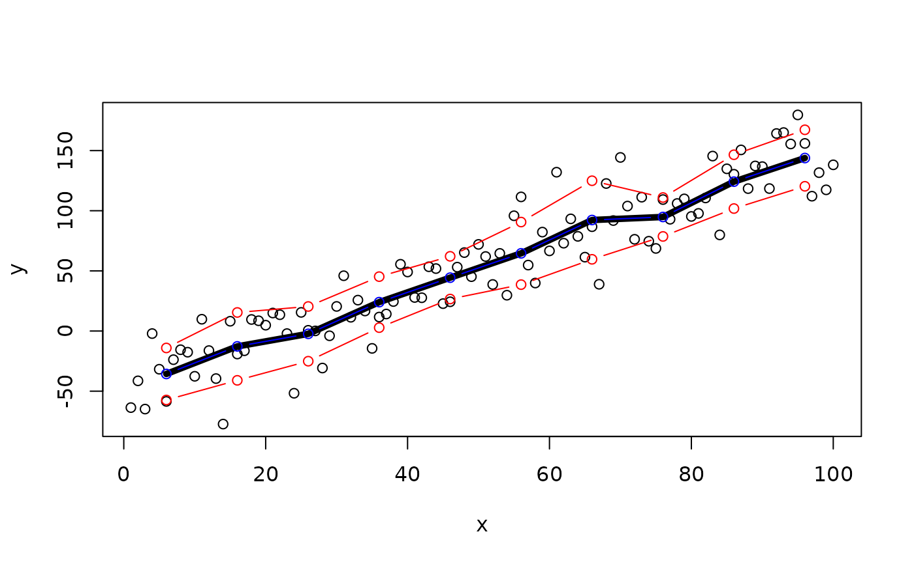

This function implements a common method for describing patterns in continuous data: summary statistics in bins. One variable (x) is binned into user-defined bins or breaks. User-defined functions are then calculated for a second variable y within each of these bins. This can help elucidate associations between y and x during data exploration, particularly if those associations are noisy.
summarise_in_bins( x, y, dat = NULL, bin = NULL, breaks = NULL, funs = list(mean = mean), shift = TRUE, to_plot = TRUE, output = "list" )
| x | The x values which will be binned. Numeric/integer, POSIXct or Date objects are supported. |
|---|---|
| y | The y values for which summary statistics will be calculated in each bin. |
| dat | (optional) A dataframe containing columns 'x' and 'y' can be supplied instead of |
| bin | A numeric or character input which defines the bin size. This is used to define a sequence of breaks, to which each value of |
| breaks | (optional) A numeric, POSIXct or Date vector of breaks. This can be supplied instead of |
| funs | A named list of functions to evaluate. |
| shift | A logical input which defines whether or not to shift the value of each bin by half a bin width (i.e. to the mid-point of each bin). This is beneficial for plots because summary statistics are shown for the mid-point of each bin. |
| to_plot | A logical input which defines whether or not the summary statistics are to be plotted (in due course). If so, the function conducts some additional checks to make sure bins are within the limits of the data: if the bin size is relatively large and |
| output | A character which defines the output type. The currently implemented options are as follows. (1) |
The function returns a list or a dataframe with summary statistics for each bin, depending on the input to output.
Edward Lavender
#### Example 1: Numeric example # Generate example data and visualise set.seed(1) x <- 1:100 y <- stats::rnorm(length(x), x * 2 - 50, 25) graphics::plot(x, y) # Calculate summary statistics in bins 10 units in length by supplying custom # ... functions via funs. shift = TRUE shift summary statistics to the middle value of each bin # ... which can be helpful for plotting. summary_ls <- summarise_in_bins(x = x, y = y, bin = 10, funs = list(mean = mean, lowerSD = function(x){mean(x) - stats::sd(x)}, upperSD = function(x){mean(x) + stats::sd(x)}), shift = TRUE) # Examine str(summary_ls) #> List of 3 #> $ mean :'data.frame': 10 obs. of 3 variables: #> ..$ bin : num [1:10] 6 16 26 36 46 56 66 76 86 96 #> ..$ stat: num [1:10] -35.69 -12.78 -2.34 24.02 44.35 ... #> ..$ fun : chr [1:10] "mean" "mean" "mean" "mean" ... #> $ lowerSD:'data.frame': 10 obs. of 3 variables: #> ..$ bin : num [1:10] 6 16 26 36 46 56 66 76 86 96 #> ..$ stat: num [1:10] -57.32 -40.99 -25.08 2.82 26.61 ... #> ..$ fun : chr [1:10] "lowerSD" "lowerSD" "lowerSD" "lowerSD" ... #> $ upperSD:'data.frame': 10 obs. of 3 variables: #> ..$ bin : num [1:10] 6 16 26 36 46 56 66 76 86 96 #> ..$ stat: num [1:10] -14.1 15.4 20.4 45.2 62.1 ... #> ..$ fun : chr [1:10] "upperSD" "upperSD" "upperSD" "upperSD" ... # Add a single summary statistic to the plot as a line: add_lines(summary_ls$mean$bin, summary_ls$mean$stat, col = "orange", lwd = 5) # Or loop over every element in the list and add a line marking the values # ... of that summary statistic in a particular colour: mapply(FUN = function(summary_df, col){ lines(summary_df$bin, summary_df$stat,col = col, type = "b")}, summary_ls, c("blue", "red", "red"))  #> $mean #> NULL #> #> $lowerSD #> NULL #> #> $upperSD #> NULL #> #### Example (3): POSIXct example # Generate some example data and visualise: x <- seq.POSIXt(as.POSIXct("2016-01-01", tz = "UTC"), as.POSIXct("2016-01-05", tz = "UTC"), by = "60 mins") y <- stats::rnorm(length(x), as.numeric(x) * 1e-3, 1e2) graphics::plot(x, y) # Calculate example summary statistics summary_ls <- summarise_in_bins(x = x, y = y, bin = "days", funs = list(mean = mean, median = median), shift = TRUE, to_plot = TRUE) # Visualise add_lines(summary_ls$mean$bin, summary_ls$mean$stat, col = "red", type = "b", lwd = 2) #### Example (4): Date example x <- seq.Date(as.Date("2016-01-01"), as.Date("2016-10-01"), "days") y <- stats::rnorm(length(x), as.numeric(x)*1e-3) graphics::plot(x, y) summary_ls <- summarise_in_bins(x = x, y = y, bin = "14 days", funs = list(mean = mean, median = median), shift = TRUE, to_plot = TRUE) # Visualise add_lines(summary_ls$mean$bin, summary_ls$mean$stat, col = "red", type = "b", lwd = 2)